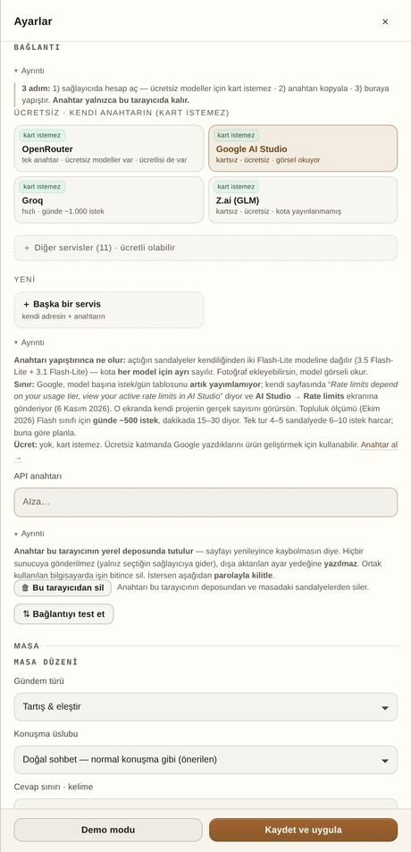

Ücretsiz API anahtarı: kart istemeyen dört servis
DivanAI anahtarsız da çalışır ama hız istiyorsan kendi ücretsiz anahtarını girmen gerekir. Aşağıdaki dördü kredi kartı istemez. Adımlar servislerin kendi sitelerinde; biz yalnız yolu tarif ediyoruz.

Dördü de kart istemiyor
| Servis | Adres | Ne için iyi |
|---|---|---|
| Google AI Studio | aistudio.google.com | Flash / Flash-Lite modelleri; görsel okuyabilir |
| Groq | console.groq.com | Hızlı cevap; gpt-oss ve Qwen modelleri |
| Z.ai (GLM) | z.ai | GLM Flash modelleri; yayınlanmış kota yok |
| OpenRouter | openrouter.ai | Tek anahtarla çok marka; :free modeller |
Kesin kota sayısı yazmıyoruz: her servis bunu kendi sayfasında yayınlıyor ve ülkeye göre değiştirebiliyor. Ekran görüntüsünü bizim ölçümümüzle değil, servisin kendi sayfasıyla karşılaştır.
Üç adımda anahtar
- Hesap aç. Dördünde de e-posta ile kayıt yeterli; dördünde de kart sorulmaz.
- Anahtarı üret. Panelde “API keys” / “Create key” düğmesi. Anahtar bir kez gösterilir; kopyala.
- DivanAI'ye yaz. Ayarlar → Bağlantı → servisin kartına bas → API anahtarı alanına yapıştır → Kaydet ve uygula.
Anahtar yapıştırılınca uygulama servisin kendi model listesini çeker ve sandalyelere markaya göre dağıtır. Model kimliğini elle yazman gerekmez.
Anahtar güvenli mi?
Anahtar yalnız senin tarayıcında, AES-GCM ile şifreli durur ve istekler doğrudan servise gider. DivanAI'nin sunucusu yoktur; anahtarını görecek bir yer yoktur. Ayrıntı: anahtar ve veri gizliliği.
Anahtarı nereden sileceğim?
Ayarlar → Bağlantı → Bu tarayıcıdan sil. Bu, anahtarı tarayıcının deposundan ve masadaki sandalye ayarlarından temizler. Servis tarafında anahtar durmaya devam eder; onu da servisin panelinden sil.
Sık sorulan sorular
Kredi kartı vermeden gerçekten oluyor mu?
Dört servis de hesap açarken kart istemiyor. Servis ileride bunu değiştirebilir; adım sırasında kart ekranı çıkarsa o servisi atlayıp diğerini kullan.
Hangi servisle başlamalıyım?
Hız istiyorsan Groq, çok marka istiyorsan OpenRouter, görsel okumak istiyorsan Google AI Studio.
Bir anahtar dört sandalyeye yeter mi?
Evet. OpenRouter gibi tek anahtarla çok model veren servislerde dört sandalye dört ayrı model alır.
Anahtarımı kaybedersem?
Servisin panelinden yenisini üret ve DivanAI'de eski anahtarın üzerine yaz. Eski anahtarı servisten sil.